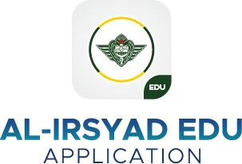
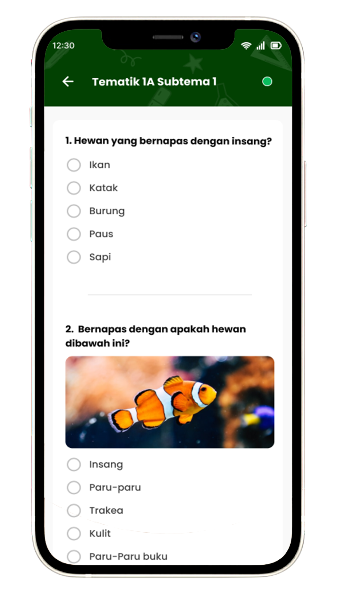
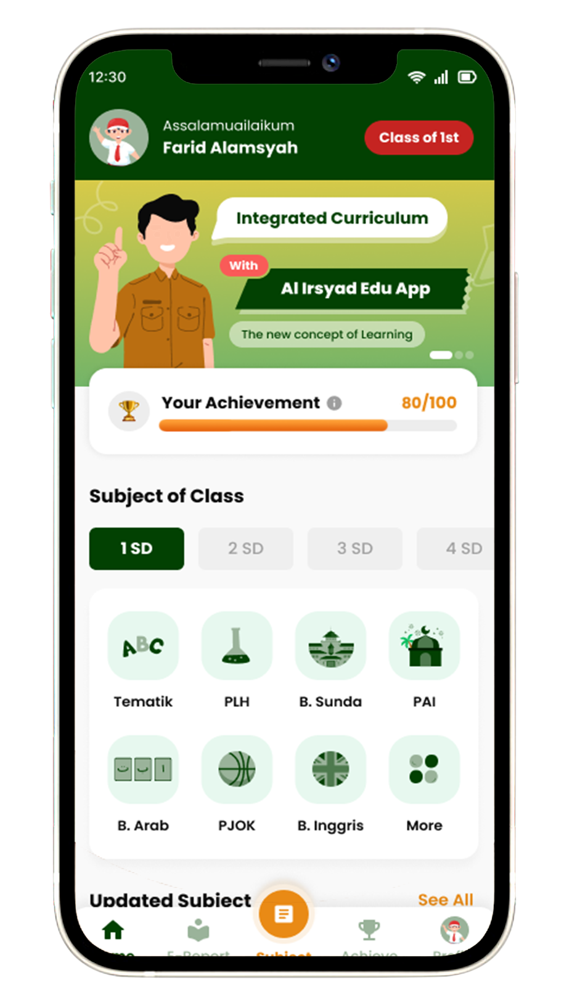
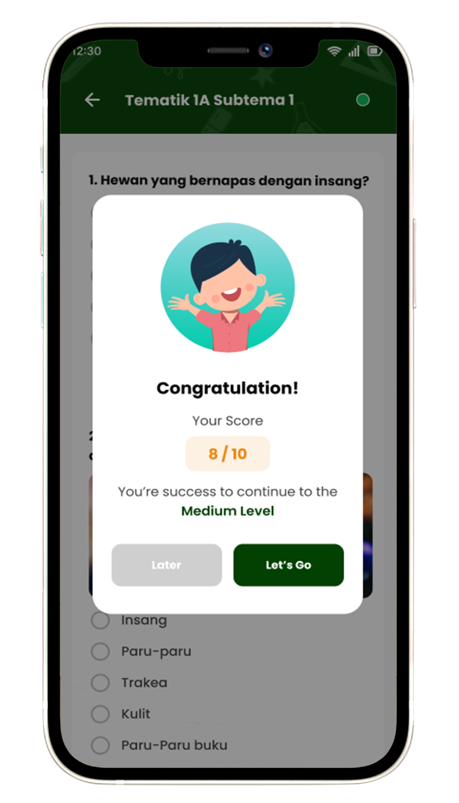

Islamic Manner
Adab kepada teman, guru, dan orang tua berdasarkan Qur'an dan Sunnah.
Sekolah Islam Terpadu Bandung
Profil Sekolah Islam Terpadu Al-Irsyad Al-Islamiyyah Bandung. Kami memadukan Kurikulum Nasional dan Kurikulum Khas Al-Irsyad dengan nilai-nilai Islam, berpijak pada manner before knowledge.
Kenali Kami#mannerbeforeknowledge
Manner before Knowledge
Adab kepada teman, guru, dan orang tua berdasarkan Qur'an dan Sunnah.
Program TTQ dan Math Mapping, karakter 5C, Bahasa Inggris dan Arab.
Program pembinaan prestasi melalui pemantapan, pengayaan, dan ekstrakurikuler.

Siswa SMPIT belajar dengan aplikasi AL IRSYAD EDU, aplikasi belajar yang diperkaya modul pembelajaran, video pembelajaran, dan simulasi pembelajaran untuk membantu memahami konsep materi pada setiap mata pelajaran.


